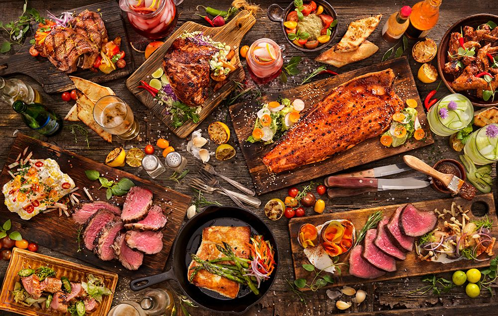

SOME OF MY FAV FOODS

PIZZA
Pizza comes in a very big variety of tastes depending upon ingredients,making,the size and texture etc.On their own,they taste good.
PASTA
Pasta is a type of food typically made from an unleavened dough of wheat flour mixed with water or eggs, and formed into sheets or other shapes
NOODLES
Noodles are a type of food made from unleavened dough which is rolled flat and cut, stretched or extruded, into long strips or strings